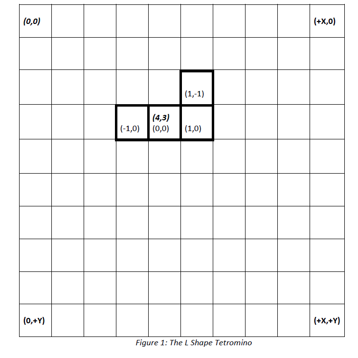

- java.lang.Object
-
- kopper.tetris.shape.Shape
-
public abstract class Shape extends Object
A class that defines the superclass for a Tetromino shape. All subclasses should at a minimum, maintain two copies of data for relative coordinates. It is suggested that this can be done by defininggetRelativeCellPos(int),getTrialRelativeCellPos(int), andgetCellCount()in a subclass to return data from two arrays ofCoordelements of equal length, respectively. Then since most normal Tetris games have a uniform color across a single Tetromino,getCellColor(int)can simply return a single color, regardless of the cell index argument. Subclasses do not need to implement the absolute position or trial absolute position data, as that is handled in this super class.A Reference diagram of coordinate space of this class and subclasses
Figure 1 shows how coordinates for the objects of this class and subclasses are stored. Each Shape defines an Absolute Position (see bolded coordinate in Figure 1), which is the absolute position of the Shape's center most cell in relation to the upper left corner of the game screen. Then each shape defines the rest of its member cells using relative coordinates (see plainly-styled, non-bolded coordinates in Figure 1) that have an origin coordinate on the center cell.
During rendering of the screen the absolute position of each member cell can be easily calculated by adding the relative coordinates to the single absolute coordinate representing the Shape's Absolute Position.
- Author:
- KopperKnight
-
-
Field Summary
Fields Modifier and Type Field Description private CoordabsPosThe Coord variable that represents this shape's position in relation to the upper left corner of the game screen.private CoordtempAbsA temp variable representing this Shape's position used for the trial methods.private booleanvisiblea debug variable.
-
Method Summary
All Methods Static Methods Instance Methods Abstract Methods Concrete Methods Modifier and Type Method Description voidclearTrial()Makes the trial coordinates equal in value (still separate objects in memory) to the actual coordinate data of this Shape.static Coord[]cloneCoords(Coord[] coords)Creates a new Coord array with each object an exact duplicate of the corresponding object in the supplied Coord array.voiddrawShape(Graphics2D g2d, BackgroundGrid grid)This method is named differently for various classes, but all classes that must paint representations of their data to the window, have some variation of a methoddrawOBJECTNAME(Graphics2D g2d);This is that method for this class.voiddrawShape(Graphics2D g2d, GridCell[][] cells)This method is named differently for various classes, but all classes that must paint representations of their data to the window, have some variation of a methoddrawOBJECTNAME(Graphics2D g2d);This is that method for this class.CoordgetAbsoluteCellPos(int cellNum)This method adds the cell center returned bygetAbsoluteShapePos()to each of this cell's relative coordinates.CoordgetAbsoluteShapePos()Returns this shape's absolute position, which is always the axis of rotation and typically the center cell of the Shape's numerous cells.abstract ColorgetCellColor(int cellNum)Returns the cell color for this Shape'scellNum'th cell.abstract intgetCellCount()This method returns the total number of cells that make up this Shape.abstract CoordgetRelativeCellPos(int cellNum)Returns the relative coordinate for the cell in question.CoordgetTrialAbsoluteCellPos(int cellNum)Works like (@link Shape#getAbsoluteCellPos(int) }, except it returns the trial version.CoordgetTrialAbsoluteShapePos()Works like (@link Shape#getAbsoluteShapePos()}, except it returns the trial version.abstract CoordgetTrialRelativeCellPos(int cellNum)Works likegetRelativeCellPos(int), except in a trial temporary way.booleanisVisible()Returns this Shape's visibility boolean.voidrotateShapeClockwise90()This method rotates this Shape 90 degrees in the clockwise direction.voidrotateShapeCounterClockwise90()This method rotates this Shape 90 degrees in the counter clockwise direction.voidsetVisible(boolean v)Sets this Shape's visibility boolean.voidtranslateShape(int x, int y)Moves the absolute position of this object by adding the x and y parameters to the existing x and y components of this Shape's absolute position.voidtranslateShapeDown()Moves the absolute position of this object downwards one row.voidtrialRotateShapeClockwise90()This method rotates this Shape just likerotateShapeClockwise90(), except it does so on temp variable copies of this Shape's actual position.voidtrialRotateShapeCounterClockwise90()This method rotates this Shape just likerotateShapeCounterClockwise90(), except it does so on temp variable copies of this Shape's actual position.voidtrialTranslateShape(int x, int y)This method translates this Shape just liketranslateShape(int, int), except it does so on temp variable copies of this Shape's actual position.If a trial operation has already been called previously, this clears it so that the trial move will represent only one potential move away from current actual Shape's internal data state.
-
-
-
Field Detail
-
tempAbs
private Coord tempAbs
A temp variable representing this Shape's position used for the trial methods.
-
absPos
private Coord absPos
The Coord variable that represents this shape's position in relation to the upper left corner of the game screen.
-
visible
private boolean visible
a debug variable. Set true during non-debug situations.
-
-
Constructor Detail
-
Shape
public Shape(int gridx, int gridy)Creates an object with the supplied x, y Cartesian coordinate for its absolute position. See Figure 1 for what this means precisely.- Parameters:
gridx- The x component of the coordinate location.gridy- The y component of the coordinate location.
-
Shape
public Shape(Coord absolutePos)
Creates an object with the supplied x, y Cartesian coordinate for its absolute position. See Figure 1 for what this means precisely.- Parameters:
absolutePos- The absolute position of this Shape.
-
-
Method Detail
-
cloneCoords
public static Coord[] cloneCoords(Coord[] coords)
Creates a new Coord array with each object an exact duplicate of the corresponding object in the supplied Coord array.- Parameters:
coords- The array to duplicate.- Returns:
- A duplicate array.
-
setVisible
public void setVisible(boolean v)
Sets this Shape's visibility boolean. Default it is visible is true.- Parameters:
v- True if visible, false if otherwise.
-
isVisible
public boolean isVisible()
Returns this Shape's visibility boolean. Default is true. If false, thendrawShape(Graphics2D, BackgroundGrid)anddrawShape(Graphics2D, GridCell[][])do nothing.- Returns:
- If false, then it is not drawn.
-
drawShape
public void drawShape(Graphics2D g2d, BackgroundGrid grid)
This method is named differently for various classes, but all classes that must paint representations of their data to the window, have some variation of a method
drawOBJECTNAME(Graphics2D g2d);This is that method for this class.Note: TO BE REIMPLEMENTED AS AN INTERFACE DEFINITION implemented by all drawable classes in the future.
This method is where the background model data represented by this object is painted to represent this object. Specifically, this object keeps track of each gridcell's color, each cell making up this Shape's shape relative to this Shape's origin.
This method is called inside
TetrisGame.paintGameRunning(Graphics2D, kopper.tetris.core.TetrisGame.State), or inside ofTetrominoStats.drawTetrominoStats(Graphics2D, boolean), which in turn is called by each respective caller methods (see their method documentation).- Parameters:
g2d- The graphics object ultimately supplied by overridden methodTetrisGame.paintComponent(java.awt.Graphics)grid- The grid that represents the background. This is used to prevent Exceptions that would occur if an off screen location represented by the shape were called.
-
drawShape
public void drawShape(Graphics2D g2d, GridCell[][] cells)
This method is named differently for various classes, but all classes that must paint representations of their data to the window, have some variation of a method
drawOBJECTNAME(Graphics2D g2d);This is that method for this class.Note: TO BE REIMPLEMENTED AS AN INTERFACE DEFINITION implemented by all drawable classes in the future.
This method is where the background model data represented by this object is painted to represent this object. Specifically, this object keeps track of each gridcell's color, whether it is occupied by a cell of a dead shape or empty space and the background color of empty space.
This method is called via helper method
TetrisGame.paintGameRunning(Graphics2D, kopper.tetris.core.TetrisGame.State), which in turn is called byTetrisGame.paintComponent(java.awt.Graphics), which in turn is an overridden method ofJComponent.paintComponent(Graphics g).- Parameters:
g2d- The graphics object ultimately supplied by overridden methodTetrisGame.paintComponent(java.awt.Graphics)cells- This is used for drawing shapes that are not on top of theBackgroundGridobject. For example, drawing theTetrominoStats.drawTetrominoStats(Graphics2D, boolean)requires this method.
-
translateShapeDown
public void translateShapeDown()
Moves the absolute position of this object downwards one row. The same as callingtranslateShape(0,1).
-
translateShape
public void translateShape(int x, int y)Moves the absolute position of this object by adding the x and y parameters to the existing x and y components of this Shape's absolute position.- Parameters:
x- The value to add to the X component (negative value is subtraction).y- The value to add to the Y component (negative value is subtraction).
-
clearTrial
public void clearTrial()
Makes the trial coordinates equal in value (still separate objects in memory) to the actual coordinate data of this Shape. Effectively clearing or erasing any trial moves made previously.
-
trialTranslateShape
public void trialTranslateShape(int x, int y)This method translates this Shape just liketranslateShape(int, int), except it does so on temp variable copies of this Shape's actual position.If a trial operation has already been called previously, this clears it so that the trial move will represent only one potential move away from current actual Shape's internal data state. It is important to test collisions between Shape and other grid coordinates of the game by making moves before they actually happen.- Parameters:
x- The value to add to the X component (negative value is subtraction).y- The value to add to the Y component (negative value is subtraction).
-
trialRotateShapeClockwise90
public void trialRotateShapeClockwise90()
This method rotates this Shape just likerotateShapeClockwise90(), except it does so on temp variable copies of this Shape's actual position. If a trial operation has already been called previously, this clears it so that the trial move will represent only one potential move away from current actual Shape's internal data state.It is important to test collisions between Shape and other grid coordinates of the game by making moves before they actually happen.
-
trialRotateShapeCounterClockwise90
public void trialRotateShapeCounterClockwise90()
This method rotates this Shape just likerotateShapeCounterClockwise90(), except it does so on temp variable copies of this Shape's actual position. If a trial operation has already been called previously, this clears it so that the trial move will represent only one potential move away from current actual Shape's internal data state. It is important to test collisions between Shape and other grid coordinates of the game by making moves before they actually happen.
-
rotateShapeClockwise90
public void rotateShapeClockwise90()
This method rotates this Shape 90 degrees in the clockwise direction. The axis of rotation is the absolute position coordinate of this Shape.
-
rotateShapeCounterClockwise90
public void rotateShapeCounterClockwise90()
This method rotates this Shape 90 degrees in the counter clockwise direction. The axis of rotation is the absolute position coordinate of this Shape.
-
getAbsoluteShapePos
public Coord getAbsoluteShapePos()
Returns this shape's absolute position, which is always the axis of rotation and typically the center cell of the Shape's numerous cells.- Returns:
- The position of this object's center cell in relation to the upper left corner cell of the game window.
-
getTrialAbsoluteShapePos
public Coord getTrialAbsoluteShapePos()
Works like (@link Shape#getAbsoluteShapePos()}, except it returns the trial version. If no trial translation or trial rotation method has been previously called or if (@link Shape#clearTrial()} has been called, then the Coord returned will represent the exact same Coord as that returned bygetAbsoluteShapePos(). In essence, a trial method makes pretend move that and this method returns the absolute center cell of this Shape if it had actually made that move in reality. This method can be thought of as returning the future position of this Shape's center cell.- Returns:
- The future position of the center cell of this object in relation to the upper left corner cell of the game.
-
getAbsoluteCellPos
public Coord getAbsoluteCellPos(int cellNum)
This method adds the cell center returned bygetAbsoluteShapePos()to each of this cell's relative coordinates. A Shape is represented by two major sets of data. First, its absolute position data pointing to this Shape's center cell in relation to the upper left corner of the game screen's grid. Second, an array or index of non-center cells that describe their location relatively with respect to the center cell of the Shape. This method converts all of those relative coordinates to absolute ones by returning new Coordinate objects that add the relative and absolute position data for all the cells of this Shape together.- Parameters:
cellNum- The index of the cell that makes up this Shape object.- Returns:
- The cell location in relation to the upper left corner grid coordinate of the game screen grid.
-
getTrialAbsoluteCellPos
public Coord getTrialAbsoluteCellPos(int cellNum)
Works like (@link Shape#getAbsoluteCellPos(int) }, except it returns the trial version. If no trial translation or trial rotation method has been previously called or if (@link Shape#clearTrial()} has been called, then the Coord returned will represent the exact same Coord as that returned bygetAbsoluteCellPos(int). In essence, a trial method makes pretend move that and this method returns thecellNum'thcell of this Shape if it had actually made that move in reality. This method can be thought of as returning the future position of this Shape'scellNum'thcell.- Parameters:
cellNum- The index of the cell that makes up this Shape object.- Returns:
- The future position of the cell of this object in relation to the upper left corner cell of the game.
-
getCellColor
public abstract Color getCellColor(int cellNum)
Returns the cell color for this Shape'scellNum'th cell.- Parameters:
cellNum- the cell in question.- Returns:
- the color for the cell in question.
-
getRelativeCellPos
public abstract Coord getRelativeCellPos(int cellNum)
Returns the relative coordinate for the cell in question. This is the coordinate of this cell in relation to this Shape's center cell.- Parameters:
cellNum- the cell in question.- Returns:
- the relative coordinate of the cell in question.
-
getTrialRelativeCellPos
public abstract Coord getTrialRelativeCellPos(int cellNum)
Works likegetRelativeCellPos(int), except in a trial temporary way. If no trial translation or trial rotation called previously, or ifclearTrial()just immediately and previously called, this method returns the same asgetRelativeCellPos(int). Otherwise, this method returns the relative temporary coordinate for the cell in question. This is the temporary coordinate of this cell in relation to this Shape's temporary center cell. The temporary data is used for collision detection before collisions actually occur.- Parameters:
cellNum- the cell in question.- Returns:
- the temporary relative coordinate of the cell in question.
-
getCellCount
public abstract int getCellCount()
This method returns the total number of cells that make up this Shape. This method provides the link between future subclasses and the logic performed in this super class. All FOR loops, and cell operations defined in this superclass use this method to figure out the number of iterations of loops to perform.- Returns:
- the number of cells that make up this shape.
-
-